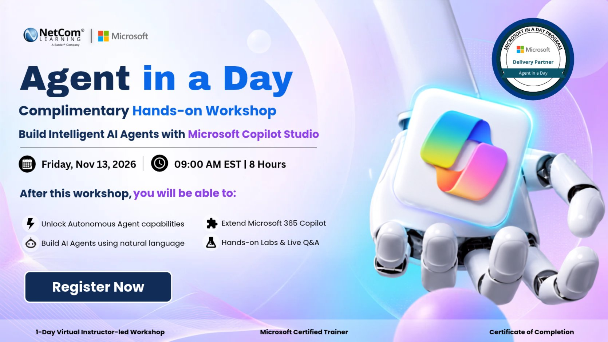
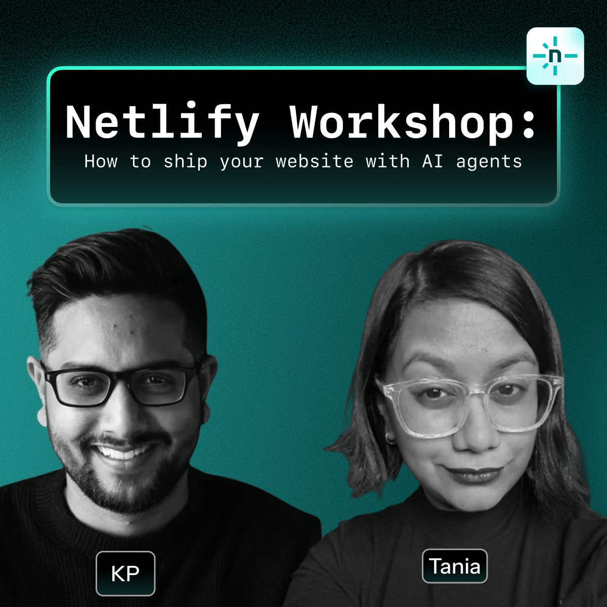
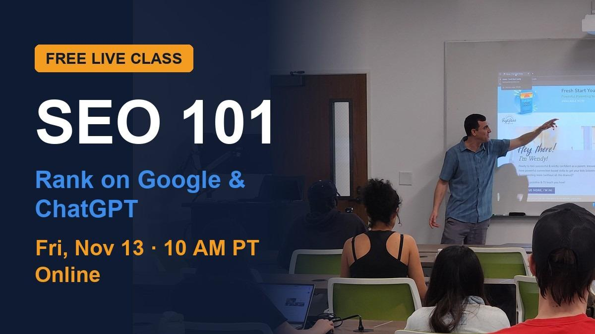

<!DOCTYPE html>
<html lang="zh-Hant">
<head>
<meta charset="utf-8">
<meta name="viewport" content="width=device-width, initial-scale=1">
<title>卷報｜免費 AI 課程 · 2026年11月13日</title>
<meta name="description" content="2026-11-13 免費 AI 課程卷報：今日舉行與今日可報名的線上免費課程整理。">
<style>


:root {
  --ink: #3d2314;
  --ink-soft: #5c4033;
  --rule: #2b160c;
  --paper: #f3e6c9;
  --paper-deep: #e8d5a8;
  --cream: #faf3e0;
  --accent: #8b4513;
}
* { box-sizing: border-box; }
html, body {
  margin: 0; padding: 0;
  background: var(--paper);
  color: var(--ink);
  font-family: "Songti SC", "Noto Serif TC", "Libre Baskerville", Georgia, "Times New Roman", serif;
  line-height: 1.55;
}
/* paper grain */
body::before {
  content: "";
  pointer-events: none;
  position: fixed;
  inset: 0;
  z-index: 9999;
  opacity: 0.07;
  background-image: url("data:image/svg+xml,%3Csvg viewBox='0 0 200 200' xmlns='http://www.w3.org/2000/svg'%3E%3Cfilter id='n'%3E%3CfeTurbulence type='fractalNoise' baseFrequency='0.85' numOctaves='4' stitchTiles='stitch'/%3E%3C/filter%3E%3Crect width='100%25' height='100%25' filter='url(%23n)' opacity='0.55'/%3E%3C/svg%3E");
  background-repeat: repeat;
  background-size: 180px 180px;
  mix-blend-mode: multiply;
}
a { color: var(--accent); }
.wrap { max-width: 980px; margin: 0 auto; padding: 24px 18px 64px; position: relative; z-index: 1; }
.masthead {
  text-align: center;
  border-top: 4px double var(--rule);
  border-bottom: 4px double var(--rule);
  padding: 18px 8px 14px;
  background: var(--cream);
  margin-bottom: 18px;
  animation: masthead-in 0.9s ease-out both;
}
@keyframes masthead-in {
  from { opacity: 0; transform: translateY(-10px); }
  to { opacity: 1; transform: translateY(0); }
}
.masthead .logo {
  width: 88px; height: 88px;
  object-fit: contain;
  display: block;
  margin: 0 auto 8px;
  border-radius: 50%;
  border: 2px solid var(--rule);
  background: var(--paper-deep);
}
.masthead .eyebrow {
  letter-spacing: 0.35em;
  font-size: 0.75rem;
  text-transform: uppercase;
  color: var(--ink-soft);
}
.masthead h1 {
  margin: 6px 0 4px;
  font-size: clamp(2.2rem, 6vw, 3.4rem);
  font-weight: 700;
  letter-spacing: 0.12em;
}
.masthead .sub {
  font-style: italic;
  color: var(--ink-soft);
  margin: 0;
}
.dateline {
  display: flex; justify-content: space-between; gap: 12px; flex-wrap: wrap;
  border-bottom: 1px solid var(--rule);
  padding: 8px 2px 10px; margin-bottom: 20px;
  font-size: 0.92rem;
}
.lede {
  columns: 1;
  border: 1px solid var(--rule);
  background: var(--cream);
  padding: 14px 16px;
  margin-bottom: 28px;
}
.lede strong { letter-spacing: 0.04em; }
.section-title {
  font-size: 1.35rem;
  border-bottom: 2px solid transparent;
  padding-bottom: 6px;
  margin: 28px 0 14px;
  letter-spacing: 0.08em;
  position: relative;
}
.section-title::after {
  content: "";
  position: absolute;
  left: 0; bottom: 0;
  height: 2px;
  width: 100%;
  background: var(--rule);
  transform-origin: left center;
  animation: ink-draw 0.85s ease-out both;
}
@keyframes ink-draw {
  from { transform: scaleX(0); opacity: 0.3; }
  to { transform: scaleX(1); opacity: 1; }
}
.grid {
  display: grid;
  grid-template-columns: 1fr;
  gap: 18px;
}
@media (min-width: 720px) {
  .grid { grid-template-columns: 1fr 1fr; }
}
.card {
  display: flex; flex-direction: column;
  border: 2px solid var(--rule);
  background: var(--cream);
  box-shadow: 3px 3px 0 rgba(61,35,20,0.15);
  opacity: 0;
  transform: translateY(14px);
  animation: fade-up 0.55s ease-out forwards;
  transition: transform 0.25s ease, box-shadow 0.25s ease;
}
.card:nth-child(1) { animation-delay: 0.05s; }
.card:nth-child(2) { animation-delay: 0.10s; }
.card:nth-child(3) { animation-delay: 0.15s; }
.card:nth-child(4) { animation-delay: 0.20s; }
.card:nth-child(5) { animation-delay: 0.25s; }
.card:nth-child(6) { animation-delay: 0.30s; }
.card:nth-child(7) { animation-delay: 0.35s; }
.card:nth-child(8) { animation-delay: 0.40s; }
.card:nth-child(9) { animation-delay: 0.45s; }
.card:nth-child(10) { animation-delay: 0.50s; }
.card:nth-child(11) { animation-delay: 0.55s; }
.card:nth-child(12) { animation-delay: 0.60s; }
.card:nth-child(n+13) { animation-delay: 0.65s; }
@keyframes fade-up {
  to { opacity: 1; transform: translateY(0); }
}
.card:hover {
  transform: translateY(-4px);
  box-shadow: 4px 8px 14px rgba(61,35,20,0.22);
}
.card-img {
  height: 160px;
  background: var(--paper-deep);
  border-bottom: 1px solid var(--rule);
  display: flex; align-items: center; justify-content: center;
  padding: 10px;
}
.card-img img {
  max-width: 100%;
  max-height: 100%;
  width: auto; height: auto;
  object-fit: contain;
}
.card-body { padding: 14px 14px 16px; display: flex; flex-direction: column; gap: 6px; flex: 1; }
.badge {
  align-self: flex-start;
  font-size: 0.72rem;
  letter-spacing: 0.08em;
  border: 1px solid var(--rule);
  padding: 2px 8px;
  background: var(--paper-deep);
}
.card h3 { margin: 4px 0 0; font-size: 1.15rem; line-height: 1.35; }
.card-en { font-size: 0.85rem; color: var(--ink-soft); font-style: italic; }
.meta { margin: 0; font-size: 0.86rem; color: var(--ink-soft); }
.desc { margin: 6px 0 0; font-size: 0.95rem; }
.notes { margin: 0; font-size: 0.8rem; color: var(--ink-soft); }
.btn {
  margin-top: auto;
  display: inline-block;
  align-self: flex-start;
  text-decoration: none;
  border: 1.5px solid var(--rule);
  padding: 6px 12px;
  background: var(--paper);
  color: var(--ink);
  font-weight: 600;
  letter-spacing: 0.04em;
}
.btn:hover { background: var(--paper-deep); }
.archives {
  margin-top: 36px;
  border-top: 2px solid var(--rule);
  padding-top: 12px;
}
.archives ul { padding-left: 1.2em; }
.footer {
  margin-top: 28px;
  font-size: 0.8rem;
  color: var(--ink-soft);
  border-top: 1px dashed var(--rule);
  padding-top: 10px;
}
@media (prefers-reduced-motion: reduce) {
  body::before { opacity: 0.04; }
  .masthead, .section-title::after, .card {
    animation: none !important;
    opacity: 1 !important;
    transform: none !important;
  }
  .card:hover {
    transform: none;
    box-shadow: 3px 3px 0 rgba(61,35,20,0.15);
  }
}


</head>
<body>
  <div class="wrap">
    <header class="masthead">
      
      <div class="eyebrow">JUANBAO · FREE AI COURSES</div>
      <h1>卷報</h1>
      <p class="sub">免費 AI 課程卷報 · 復古日刊</p>
    </header>

    <div class="dateline">
      <span>二零二六年十一月十三日（星期五）</span>
      <span>Asia/Macau（UTC+8）</span>
      <span>第 011 號</span>
    </div>

    <section class="lede">
      <p><strong>今日提要：</strong>今日提要：核實收錄 <strong>21</strong> 項線上免費 AI 課程／工作坊，其中 <strong>11</strong> 項於今日舉行（主辦時區為 11/13；部分換算後為澳門翌日凌晨），其餘為今日仍可報名或即時開讀嘅自學課。免費＝無需付費即可參加或旁聽；證書或 API 用量或另計，已於卡片註明。公開網址：<a href="https://wayneleong-byte.github.io/juanbao/">https://wayneleong-byte.github.io/juanbao/</a>。澳門今日下午至晚上重點：17:30 歐盟官方「AI Act」免費 webinar（英語）；19:30 Accupass「AI 工程師轉職班」免費講座（繁中，Youtube；或介紹後續付費課）；20:00 並場 Elect AI「20 個生產力方法」（一小時）同每日免費 AI Masterclass（至 22:00）。22:00 起有 TAI Labs 前線工程師 30 分鐘場、AI After 5 女性 AI 線上會議今日場（先是大企業面試分享），以及 Microsoft Copilot Studio「Agent in a Day」全日工作坊（須審核，優先美加專業人士，澳門讀者不一定獲批）。23:30 有商業 AI 與自動化工作坊（跨午夜）。澳門翌日凌晨：01:00 Netlify「用 AI 代理上線個人網站」；02:00 SEO／AI 搜尋入門同 AI After 5「Designing Joy」；03:00 AI User Safety「人工智能入門」；04:00 AI After 5 工程系統場。已剔除付費場（Accupass LINE 機器人工作坊 isFree=false；Accupass「AI 社群行銷」單堂收費；Eventbrite「AI Ethics and Policy for Arts Organizations」isFree=false、高價 28.52；「Synthetic Media」isFree=false、高價 17.85；Luma「Business Meets AI」票價 15 美元），實體場（Raleigh「AI Money & Career」工作坊、NYC Claude Art Meetup 已售罄），兒童／親子場（Eventbrite OPEN LAB Children’s Day），報名已關閉之場（Input The Output「From AI to Agentic AI」頁面顯示 seats are closed），以及非以 AI 為主的 .NET Conf 2026 Community Day 2。Meetup「Generative AI Workshop」原搜尋連結回 404，未能核實故不收錄。11 月 6 至 8 日未出刊。</p>
    </section>

    <h2 class="section-title">一、今日舉行（線上）</h2>
    <div class="grid">
      <article class="card">
  <div class="card-img"></div>
<div class="card-body">
    <span class="badge">今日舉行</span>
    <h3>歐盟 AI Act 免費 webinar</h3>
    <div class="card-en">EU - Webinar: AI Act</div>
<p class="meta"><strong>主辦：</strong>歐洲知識產權服務台（European IP Helpdesk）／歐洲創新委員會及中小企執行署（EISMEA）</p>
    <p class="meta"><strong>語言：</strong>英語</p>
    <p class="meta"><strong>時段：</strong>2026-11-13（五）10:30–12:00（CET, Europe/Brussels, UTC+1）≈ 澳門時間 17:30–19:00；Livestream</p>
    <p class="meta"><strong>報名／截止：</strong>官方頁標 Entrance fee: This Webinar is offered free of charge；限額 1000 人；須於官方頁或 GoToWebinar 免費登記</p>
    <p class="desc">歐盟官方免費直播，介紹《人工智能法》（AI Act）的背景與目的、主要條款與要求、合規與實施、倫理與社會考量、案例同實務應用，以及後續發展。</p>
    <p class="notes">官方頁並列 Live streaming available。報名連結為 GoToWebinar（attendee.gotowebinar.com/register/1936834169370181979）。本場屬法規／政策培訓，不是動手寫程式課。</p>
<a class="btn" href="https://intellectual-property-helpdesk.ec.europa.eu/news-events/upcoming-trainings-events/eu-webinar-ai-act-2026-11-13_en" target="_blank" rel="noopener">官方連結 →</a>
  </div>
</article>
<article class="card">
  <div class="card-img"></div>
<div class="card-body">
    <span class="badge">今日舉行</span>
    <h3>免費線上講座：AI 工程師轉職班（後端入門）</h3>
    <div class="card-en">【免費線上講座】AI工程師轉職班 - 成為AI後端工程師的第一步，挑戰年薪百萬</div>
<p class="meta"><strong>主辦：</strong>兆宇培育股份有限公司（Accupass／Youtube）</p>
    <p class="meta"><strong>語言：</strong>繁體中文</p>
    <p class="meta"><strong>時段：</strong>2026-11-13（五）19:30–20:30（GMT+8）≈ 澳門時間 19:30–20:30；Online／Youtube</p>
    <p class="meta"><strong>報名／截止：</strong>Accupass API isFree=true、eventPlaceType=Online、票價 NT$ 0；須於 Accupass 活動頁免費取票，完成後可從票券頁進入直播</p>
    <p class="desc">一小時免費線上講座，面向零基礎、想了解如何在 AI 時代轉職後端工程師的人：討論為何仍要學程式、AI 輔助開發下後端工程師需要什麼能力，以及資料庫、API 與系統開發的入門方向。</p>
    <p class="notes">官方 API 確認免費同線上，直播平台為 Youtube。標題含「挑戰年薪百萬」，內容或會介紹後續付費「零基礎後端轉職班」課程，與本場免費旁聽分開，沒有保證收入或轉職結果。</p>
<a class="btn" href="https://www.accupass.com/event/2610250407291111944126" target="_blank" rel="noopener">官方連結 →</a>
  </div>
</article>
<article class="card">
  <div class="card-img"></div>
<div class="card-body">
    <span class="badge">今日舉行</span>
    <h3>用 AI 提升日常生產力的 20 個方法（Elect AI）</h3>
    <div class="card-en">20 Ways AI Can Make Your Day More Productive_From Elect AI</div>
<p class="meta"><strong>主辦：</strong>Elect AI（Eventbrite／線上）</p>
    <p class="meta"><strong>語言：</strong>英語</p>
    <p class="meta"><strong>時段：</strong>2026-11-13（五）12:00–13:00 UTC（UTC+0）≈ 澳門時間 20:00–21:00；Online</p>
    <p class="meta"><strong>報名／截止：</strong>Eventbrite 資料 isFree=true、eventAttendanceMode=Online、lowPrice=0.0、highPrice=0.0；須免費取票</p>
    <p class="desc">一小時免費直播，示範 20 個把 AI 用進日常工作、爭取多 1 至 2 小時的實務做法。</p>
    <p class="notes">官方頁標明 free 60 minute live webinar。或會介紹主辦後續產品／課程，與本場免費旁聽分開。</p>
<a class="btn" href="https://www.eventbrite.co.uk/e/20-ways-ai-can-make-your-day-more-productive-from-elect-ai-tickets-2004008161357" target="_blank" rel="noopener">官方連結 →</a>
  </div>
</article>
<article class="card">
  <div class="card-img"></div>
<div class="card-body">
    <span class="badge">今日舉行</span>
    <h3>每日免費 AI Masterclass（今日 13 Nov 場）</h3>
    <div class="card-en">DAILY FREE AI Masterclass (8-10PM SGT) | Week of 9 Nov — Fri 13 Nov</div>
<p class="meta"><strong>主辦：</strong>AI Hustle Generation／Alaric Ong、Coach BK Han（Luma／線上）</p>
    <p class="meta"><strong>語言：</strong>英語</p>
    <p class="meta"><strong>時段：</strong>2026-11-13（五）20:00–22:00（Asia/Singapore, UTC+8）≈ 澳門時間 20:00–22:00；Online，live</p>
    <p class="meta"><strong>報名／截止：</strong>Luma 票種「Fri 13 Nov, 8-10pm SGT」type=free、is_disabled=false；須先在 Luma 免費登記，再完成確認信內的第二步報名才會收到課堂連結</p>
    <p class="desc">兩小時免費線上大師課，面向非技術背景：介紹 AI 聊天機械人、電話代理、網站、廣告、影像影片服務同自動化等收入路徑，以及如何把 AI 服務定價、包裝成可重複的服務。</p>
    <p class="notes">官方頁寫 Format: Online, live、Ticket: Free。Luma API 的 location_type 顯示 offline，與頁面說明不符，以頁面「Online, live」為準。報名後必須再開確認信裡的第二個登記連結，否則可能收不到課堂連結。內容偏商業變現，沒有保證收入。</p>
<a class="btn" href="https://luma.com/pmtqc5nk" target="_blank" rel="noopener">官方連結 →</a>
  </div>
</article>
<article class="card">
  <div class="card-img"></div>
<div class="card-body">
    <span class="badge">今日舉行</span>
    <h3>AI 前線工程師工作手冊（免費直播工作坊）</h3>
    <div class="card-en">The AI Forward-Deployed Engineer Playbook</div>
<p class="meta"><strong>主辦：</strong>TAI Labs（線上）</p>
    <p class="meta"><strong>語言：</strong>英語</p>
    <p class="meta"><strong>時段：</strong>2026-11-13（五）14:00–14:30 GMT／UTC（官方標 14:00 GMT · 14:00 UTC）≈ 澳門時間 22:00–22:30；Online</p>
    <p class="meta"><strong>報名／截止：</strong>官方頁標 Free. Live. Practical.；只需電郵、不必先開帳戶；須於活動頁免費登記，會收到行事曆邀請同開場前約一小時提醒</p>
    <p class="desc">30 分鐘免費實務直播，由從業者示範 AI 前線工程（forward-deployed engineer）的工作流程與判斷，並設現場問答。</p>
    <p class="notes">官方 JSON-LD 確認線上、14:00–14:30 UTC。時段較短，適合想快速了解實務流程的人。課後或會收到後續資源／帳戶相關郵件。</p>
<a class="btn" href="https://tailabs.ai/events/409" target="_blank" rel="noopener">官方連結 →</a>
  </div>
</article>
<article class="card">
  <div class="card-img"></div>
<div class="card-body">
    <span class="badge">今日舉行</span>
    <h3>AI After 5 免費線上會議：女性用 AI 創作（今日為最後一天）</h3>
    <div class="card-en">AI After 5 Virtual Conference: Women Building with AI — Friday 13 Nov</div>
<p class="meta"><strong>主辦：</strong>AI After 5（Luma／線上）</p>
    <p class="meta"><strong>語言：</strong>英語</p>
    <p class="meta"><strong>時段：</strong>會議期 2026-11-11 至 11-13，全部時間為 EST（UTC-5）。今日（五）場次：09:00 EST≈澳門 22:00「Campus to Cloud: Cracking the Big Tech Interview」；13:00 EST≈澳門 11/14 02:00「Designing Joy: Whimsy &amp; Delight in AI and Software」；15:00 EST≈澳門 11/14 04:00「Solo Coder to Multi-Repo Engineer」。場次之間有 networking lounge</p>
    <p class="meta"><strong>報名／截止：</strong>Luma ticket Standard type=free、require_approval=false、registration_availability=open；須於 Luma 免費登記</p>
    <p class="desc">因 Grace Hopper Celebration 取消而舉辦的免費線上會議，對象為學習、探索同用 AI 創作的女性社群；可只參加單場或留待下午。今日為第二週最後一天，場次包括大企業面試分享、AI／軟件體驗設計，以及工程系統規模化。</p>
    <p class="notes">官方頁寫 free virtual conference，Luma API 確認免費且仍開放報名。部分今日場次偏職涯／面試，不全是工具教學。Week 1 錄影據官方說明會在第二週開始前提供。活動面向女性社群，頁面未寫死其他身分不能旁聽，報名前請自行閱讀官方說明。</p>
<a class="btn" href="https://luma.com/aiafter5-ghc-week2" target="_blank" rel="noopener">官方連結 →</a>
  </div>
</article>
<article class="card">
  <div class="card-img"></div>
<div class="card-body">
    <span class="badge">今日舉行</span>
    <h3>免費 Microsoft Agent in a Day 動手工作坊</h3>
    <div class="card-en">Agent in a Day | Hands on Workshop</div>
<p class="meta"><strong>主辦：</strong>New York Web Design Meetup Group（Meetup／線上）</p>
    <p class="meta"><strong>語言：</strong>英語</p>
    <p class="meta"><strong>時段：</strong>2026-11-13（五）09:00–17:00（EST, UTC-5）≈ 澳門時間 22:00 至 11/14 06:00；Online；全程約 8 小時</p>
    <p class="meta"><strong>報名／截止：</strong>Meetup eventType=ONLINE、feeSettings=null、標題標 FREE；報名須經審核（registration is subject to approval），官方註明優先批准美國／加拿大專業人士。澳門讀者不一定獲批，請先讀活動頁再決定是否 RSVP</p>
    <p class="desc">全日免費線上手作工作坊，用 Microsoft Copilot Studio 建立 AI 代理：以自然語言建 agent、了解自主能力、延伸 Microsoft 365 Copilot，並接到現成整合，應用到業務場景。完成者或可獲完課證明，以及 NetCom 365 學習資源入口。</p>
    <p class="notes">官方標明免費，但名額有限且須審核，優先美加專業人士，不保證一般公開報名都能入場。時段對澳門是通宵，請衡量作息。或有主辦後續課程／門戶宣傳。</p>
<a class="btn" href="https://www.meetup.com/new-york-web-design-meetup-group/events/317192167/" target="_blank" rel="noopener">官方連結 →</a>
  </div>
</article>
<article class="card">
  <div class="card-img"></div>
<div class="card-body">
    <span class="badge">今日舉行</span>
    <h3>認識顧客並留住他們：商業 AI 與自動化工作坊</h3>
    <div class="card-en">Know your Customer and keep them — The Business AI + Automations Workshop</div>
<p class="meta"><strong>主辦：</strong>Midasweb（Eventbrite／線上）</p>
    <p class="meta"><strong>語言：</strong>英語</p>
    <p class="meta"><strong>時段：</strong>2026-11-13（五）09:30–11:00（CST, UTC-6）≈ 澳門時間 23:30 至 11/14 01:00；Online</p>
    <p class="meta"><strong>報名／截止：</strong>Eventbrite 資料 isFree=true、eventAttendanceMode=Online、lowPrice=0.0、highPrice=0.0；須免費取票</p>
    <p class="desc">約 90 分鐘免費線上工作坊，講市場研究工具（如 Perplexity）、高階提示詞框架（ROLE、TASK、BACKGROUND、OUTPUT），以及企業內外自動化入門，並設現場問答。對象為企業主與想用 AI 做業務自動化的人。</p>
    <p class="notes">官方寫本場通常價值 149 美元，今次免費開放。參加者或獲 30 日免費使用 Midas App，以及後續培訓／教練關係宣傳，與本場免費旁聽分開。</p>
<a class="btn" href="https://www.eventbrite.com/e/know-your-customer-and-keep-them-tickets-2000055707461" target="_blank" rel="noopener">官方連結 →</a>
  </div>
</article>
<article class="card">
  <div class="card-img"></div>
<div class="card-body">
    <span class="badge">今日舉行</span>
    <h3>用 AI 代理做出並上線你的個人網站（工作坊）</h3>
    <div class="card-en">How To Ship Your Personal Website with AI Agents [Workshop]</div>
<p class="meta"><strong>主辦：</strong>Netlify Community Events（Luma／YouTube 線上）</p>
    <p class="meta"><strong>語言：</strong>英語</p>
    <p class="meta"><strong>時段：</strong>2026-11-13（五）12:00–13:00（America/New_York EST, UTC-5）＝ 17:00–18:00 UTC ≈ 澳門時間 11/14 01:00–02:00；Online（Luma location_type=youtube）</p>
    <p class="meta"><strong>報名／截止：</strong>Luma ticket Standard type=free、registration_availability=open；須於 Luma 免費登記</p>
    <p class="desc">一小時適合初學者的官方社群工作坊，由 Netlify 的 Karthik Puvvada 與 Tania Chakraborty 帶領，用 Netlify Agent Runners 由零做出並上線個人網站，最後會有一場 AI 代理現場比試。</p>
    <p class="notes">Luma API 確認免費、未售罄。主辦提到正值 Friday the 13th，過程或較輕鬆。須能觀看 YouTube 直播。</p>
<a class="btn" href="https://luma.com/netlify-BYOW" target="_blank" rel="noopener">官方連結 →</a>
  </div>
</article>
<article class="card">
  <div class="card-img"></div>
<div class="card-body">
    <span class="badge">今日舉行</span>
    <h3>免費 SEO 101：在 Google、ChatGPT 同 AI 搜尋上被找到</h3>
    <div class="card-en">Free SEO 101 Class: Rank on Google, ChatGPT &amp; AI Search</div>
<p class="meta"><strong>主辦：</strong>Brandon Leibowitz（Eventbrite／線上）</p>
    <p class="meta"><strong>語言：</strong>英語</p>
    <p class="meta"><strong>時段：</strong>2026-11-13（五）10:00–11:00（PST, UTC-8）≈ 澳門時間 11/14 02:00–03:00；Online</p>
    <p class="meta"><strong>報名／截止：</strong>Eventbrite 資料 isFree=true、eventAttendanceMode=Online、lowPrice=0.0、highPrice=0.0；須免費取票</p>
    <p class="desc">一小時免費直播入門課，講如何在 Google 同 ChatGPT 等 AI 搜尋結果中提升可見度，並把流量轉成潛在客戶。</p>
    <p class="notes">本場以 SEO／AI 搜尋優化為主，不是模型或編程課。或有後續付費服務宣傳，與本場免費旁聽分開。美國 11 月已用太平洋標準時間 PST（UTC-8）。</p>
<a class="btn" href="https://www.eventbrite.com/e/free-seo-101-class-rank-on-google-chatgpt-ai-search-tickets-2004260656577" target="_blank" rel="noopener">官方連結 →</a>
  </div>
</article>
<article class="card">
  <div class="card-img"></div>
<div class="card-body">
    <span class="badge">今日舉行</span>
    <h3>人工智能入門（AI User Safety Initiative 免費 Zoom 工作坊）</h3>
    <div class="card-en">Introduction to AI — November Safe AI Use Workshops</div>
<p class="meta"><strong>主辦：</strong>AI User Safety Initiative（Zoom）</p>
    <p class="meta"><strong>語言：</strong>英語</p>
    <p class="meta"><strong>時段：</strong>2026-11-13（五）1:00 PM CST｜2:00 PM EST｜7:00 PM GMT（官方並列；CST 為 UTC-6）≈ 澳門時間 11/14 03:00 開始；Live on Zoom。官方頁未另列結束時間，時長請以確認信或活動頁為準</p>
    <p class="meta"><strong>報名／截止：</strong>官方頁標 Investment: FREE；填寫姓名與電郵即可報名一場或多場（11/13 入門、11/19 提示詞、11/26 問答）；確認信後再寄 Zoom 連結</p>
    <p class="desc">用淺白語言介紹什麼是 AI、它如何運作，以及已在日常生活出現的地方。無需技術背景，適合初學者。主持為 Gbemileke Agbedejobi。</p>
    <p class="notes">官方十一月系列共三場，全部免費、同一時段、Zoom 進行。本刊只把今日 11/13「Introduction to AI」列為今日舉行；另外兩場尚未到日期，不列入今日場次。頁面配圖為主辦社群活動照片。</p>
<a class="btn" href="https://www.aiusersafety.org/workshops/november-2026/" target="_blank" rel="noopener">官方連結 →</a>
  </div>
</article>
    </div>

    <h2 class="section-title">二、自學／今日可報名</h2>
    <div class="grid">
      <article class="card">
  <div class="card-img"></div>
<div class="card-body">
    <span class="badge">自學／可報名</span>
    <h3>Elements of AI：人工智慧入門</h3>
    <div class="card-en">Elements of AI – Introduction to AI</div>
<p class="meta"><strong>主辦：</strong>University of Helsinki &amp; MinnaLearn</p>
    <p class="meta"><strong>語言：</strong>多語（含英語等）</p>
    <p class="meta"><strong>時段：</strong>自學進度，無固定開課日</p>
    <p class="meta"><strong>報名／截止：</strong>隨時可報名</p>
    <p class="desc">赫爾辛基大學聯同 MinnaLearn 推出嘅免費 AI 素養課，無需複雜數學或編程；另有 Building AI 進階篇。</p>
    <p class="notes">2026-11-13 重新核實連結仍活（HTTP 200）。</p>
<a class="btn" href="https://www.elementsofai.com/" target="_blank" rel="noopener">官方連結 →</a>
  </div>
</article>
<article class="card">
  <div class="card-img"></div>
<div class="card-body">
    <span class="badge">自學／可報名</span>
    <h3>生成式 AI 導論（Google Skills）</h3>
    <div class="card-en">Introduction to Generative AI</div>
<p class="meta"><strong>主辦：</strong>Google Skills</p>
    <p class="meta"><strong>語言：</strong>英語（另有多語版本）</p>
    <p class="meta"><strong>時段：</strong>約 45 分鐘微課，自學</p>
    <p class="meta"><strong>報名／截止：</strong>隨時可報名</p>
    <p class="desc">Google 官方生成式 AI 入門微課，介紹生成式模型概念、應用同使用時要注意的限制。</p>
    <p class="notes">2026-11-13 重新核實連結仍活（HTTP 200）。完成後或可選領課程徽章；證書安排以官方頁為準。 今日以 GET 核實官方課程路徑時回 HTTP 403（可能有門牆或地區限制），仍沿用 Google Skills 官方網址，開啟前請自行確認頁面可進入。</p>
<a class="btn" href="https://www.skills.google/course_templates/536FREE" target="_blank" rel="noopener">官方連結 →</a>
  </div>
</article>
<article class="card">
  <div class="card-img"></div>
<div class="card-body">
    <span class="badge">自學／可報名</span>
    <h3>機器學習速成班（Google）</h3>
    <div class="card-en">Machine Learning Crash Course</div>
<p class="meta"><strong>主辦：</strong>Google for Developers</p>
    <p class="meta"><strong>語言：</strong>英語</p>
    <p class="meta"><strong>時段：</strong>模組化自學，網頁直接開放</p>
    <p class="meta"><strong>報名／截止：</strong>隨時；網頁公開閱讀</p>
    <p class="desc">Google 經典機器學習速成班，結合影片、閱讀同程式練習，由概念走到實作。</p>
    <p class="notes">2026-11-13 重新核實連結仍活（HTTP 200）。</p>
<a class="btn" href="https://developers.google.com/machine-learning/crash-course" target="_blank" rel="noopener">官方連結 →</a>
  </div>
</article>
<article class="card">
  <div class="card-img"></div>
<div class="card-body">
    <span class="badge">自學／可報名</span>
    <h3>Hugging Face 大型語言模型課程</h3>
    <div class="card-en">Hugging Face LLM Course</div>
<p class="meta"><strong>主辦：</strong>Hugging Face</p>
    <p class="meta"><strong>語言：</strong>英語（有簡中等翻譯）</p>
    <p class="meta"><strong>時段：</strong>每章約一週／6–8 小時建議節奏</p>
    <p class="meta"><strong>報名／截止：</strong>隨時；公開閱讀</p>
    <p class="desc">由 Transformer 基礎、微調到 token 分類、翻譯同語言模型應用，配合 Hugging Face 生態實作。</p>
    <p class="notes">2026-11-13 重新核實連結仍活（HTTP 200）。使用付費模型 API 或雲端運算或另計，可用免費方案或本地模型。</p>
<a class="btn" href="https://huggingface.co/learn/llm-course" target="_blank" rel="noopener">官方連結 →</a>
  </div>
</article>
<article class="card">
  <div class="card-img"></div>
<div class="card-body">
    <span class="badge">自學／可報名</span>
    <h3>Hugging Face AI Agents 課程</h3>
    <div class="card-en">Hugging Face AI Agents Course</div>
<p class="meta"><strong>主辦：</strong>Hugging Face</p>
    <p class="meta"><strong>語言：</strong>英語（有中文翻譯貢獻）</p>
    <p class="meta"><strong>時段：</strong>建議每章約一週／3–4 小時</p>
    <p class="meta"><strong>報名／截止：</strong>隨時；公開閱讀</p>
    <p class="desc">介紹 AI Agents 的工具使用、規劃同多代理協作，並以開源框架動手做。</p>
    <p class="notes">2026-11-13 重新核實連結仍活（HTTP 200）。呼叫雲端模型 API 可能產生費用。</p>
<a class="btn" href="https://hf.co/learn/agents-course" target="_blank" rel="noopener">官方連結 →</a>
  </div>
</article>
<article class="card">
  <div class="card-img"></div>
<div class="card-body">
    <span class="badge">自學／可報名</span>
    <h3>OpenAI Academy 免費課程</h3>
    <div class="card-en">OpenAI Academy</div>
<p class="meta"><strong>主辦：</strong>OpenAI</p>
    <p class="meta"><strong>語言：</strong>英語</p>
    <p class="meta"><strong>時段：</strong>多條學習路徑，自學（如 AI Foundations 約 60–75 分鐘）</p>
    <p class="meta"><strong>報名／截止：</strong>隨時可登記免費帳戶學習</p>
    <p class="desc">OpenAI 官方學習中心，提供提示、ChatGPT 工作應用等免費路徑；今日公開行程未見 11/11 專場直播。</p>
    <p class="notes">2026-11-13 重新核實連結仍活（HTTP 200）。部分進階能力或 API 用量或另計。</p>
<a class="btn" href="https://academy.openai.com/" target="_blank" rel="noopener">官方連結 →</a>
  </div>
</article>
<article class="card">
  <div class="card-img"></div>
<div class="card-body">
    <span class="badge">自學／可報名</span>
    <h3>Claude 101</h3>
    <div class="card-en">Claude 101（Claude Academy）</div>
<p class="meta"><strong>主辦：</strong>Anthropic / Claude Academy</p>
    <p class="meta"><strong>語言：</strong>英語</p>
    <p class="meta"><strong>時段：</strong>約 13 課／2.5 小時＋測驗，自學</p>
    <p class="meta"><strong>報名／截止：</strong>隨時；免費 Claude 帳戶即可儲存進度與徽章</p>
    <p class="desc">由第一次對話、提示、Projects／Artifacts／Skills，到 Connectors 與角色應用；Academy 整體標明免費。</p>
    <p class="notes">2026-11-13 重新核實連結仍活（HTTP 200）。</p>
<a class="btn" href="https://academy.claude.com/courses/claude-101" target="_blank" rel="noopener">官方連結 →</a>
  </div>
</article>
<article class="card">
  <div class="card-img"></div>
<div class="card-body">
    <span class="badge">自學／可報名</span>
    <h3>生成式 AI 初學者課程（Microsoft）</h3>
    <div class="card-en">Generative AI for Beginners</div>
<p class="meta"><strong>主辦：</strong>Microsoft（GitHub 開源課程）</p>
    <p class="meta"><strong>語言：</strong>英語（多語社群翻譯）</p>
    <p class="meta"><strong>時段：</strong>21 課，自學</p>
    <p class="meta"><strong>報名／截止：</strong>隨時；MIT 授權公開閱讀</p>
    <p class="desc">概念課＋實作課；建議有 Python／TypeScript 基礎。內容免費；呼叫雲端模型 API 可能產生費用，可用本地模型。</p>
    <p class="notes">2026-11-13 重新核實連結仍活（HTTP 200）。</p>
<a class="btn" href="https://github.com/microsoft/generative-ai-for-beginners" target="_blank" rel="noopener">官方連結 →</a>
  </div>
</article>
<article class="card">
  <div class="card-img"></div>
<div class="card-body">
    <span class="badge">自學／可報名</span>
    <h3>給程式員嘅實務深度學習</h3>
    <div class="card-en">Practical Deep Learning for Coders</div>
<p class="meta"><strong>主辦：</strong>fast.ai</p>
    <p class="meta"><strong>語言：</strong>英語</p>
    <p class="meta"><strong>時段：</strong>Part 1：9 課各約 90 分鐘；另有 Part 2</p>
    <p class="meta"><strong>報名／截止：</strong>隨時</p>
    <p class="desc">Jeremy Howard 主講，面向有編程經驗者；PyTorch／fastai／Hugging Face，可用免費雲端資源。配套書亦免費網上可讀。</p>
    <p class="notes">2026-11-13 重新核實連結仍活（HTTP 200）。</p>
<a class="btn" href="https://course.fast.ai/" target="_blank" rel="noopener">官方連結 →</a>
  </div>
</article>
<article class="card">
  <div class="card-img"></div>
<div class="card-body">
    <span class="badge">報名窗口開放</span>
    <h3>2026-TAICA 關鍵科技探索：人工智慧</h3>
<p class="meta"><strong>主辦：</strong>國立清華大學磨課師 MOOCS（郭柏志）</p>
    <p class="meta"><strong>語言：</strong>繁體中文</p>
    <p class="meta"><strong>時段：</strong>開課期 2025/09/08–2026/12/31；可自學</p>
    <p class="meta"><strong>報名／截止：</strong>報名截止 2026/12/31</p>
    <p class="desc">完全免費：AI 演進、醫療決策、影像辨識、語言模型、可信／公平／可解釋性。不限身分。</p>
    <p class="notes">2026-11-13 重新核實連結仍活（HTTP 200）。</p>
<a class="btn" href="https://mooc.nthu.edu.tw/course/info/459" target="_blank" rel="noopener">官方連結 →</a>
  </div>
</article>
    </div>

    <div class="archives">
      <h2 class="section-title">過刊（近 7 日）</h2>
      <ul>
        <li><a href="index.html">2026-11-13（今日）</a></li>
        <li><a href="2026-11-12.html">2026-11-12</a></li>
        <li><a href="2026-11-11.html">2026-11-11</a></li>
        <li><a href="2026-11-10.html">2026-11-10</a></li>
        <li><a href="2026-11-09.html">2026-11-09</a></li>
      </ul>
      <p class="notes">2026-11-06、2026-11-07、2026-11-08 未出刊。2026-11-05 已滿 7 日，不再列於過刊；檔案仍保留於站內。</p>
    </div>

    <footer class="footer">
      <p>僅收錄已用 curl／官方 API／頁面結構化資料核實、標明免費或無收費欄之線上項目；唔捏造連結。今日舉行核實包括：歐洲知識產權服務台「EU Webinar: AI Act」官方頁標 free of charge、10:30–12:00 CET（Europe/Brussels）、Live streaming，報名為 GoToWebinar；Accupass「AI工程師轉職班」API isFree=true、eventPlaceType=Online、livePlatform=Youtube、票價 NT$ 0、19:30–20:30 GMT+8；Eventbrite Elect AI「20 Ways…」isFree=true、Online、lowPrice=0.0、12:00–13:00 UTC；Luma 每日 Masterclass 票種「Fri 13 Nov, 8-10pm SGT」type=free（官方頁寫 Online, live；API location_type=offline，以頁面為準）；TAI Labs「Forward-Deployed Engineer Playbook」官方頁標 Free. Live. Practical.、JSON-LD 14:00–14:30 UTC、OnlineEventAttendanceMode；Luma「AI After 5 Virtual Conference」ticket type=free、registration_availability=open，官方寫 11/11–11/13 免費線上會議，今日場次見官方 Week 2 日程（EST）；Meetup「Agent in a Day」eventType=ONLINE、feeSettings=null、標題標 FREE，但須審核且優先美加專業人士，已於卡片註明；Eventbrite Midasweb「Know your Customer」isFree=true、Online、lowPrice=0.0、09:30–11:00 CST；Luma Netlify「Ship Your Personal Website with AI Agents」ticket Standard type=free、location_type=youtube、12:00–13:00 America/New_York；Eventbrite「Free SEO 101」isFree=true、Online、lowPrice=0.0、10:00–11:00 PST；AI User Safety Initiative「Introduction to AI」官方頁標 Investment: FREE、Live on Zoom、1:00 PM CST／2:00 PM EST／7:00 PM GMT，結束時間未另列。已剔除：Accupass LINE 機器人工作坊 API isFree=false；Accupass「AI 社群行銷三堂直播」單堂收費；Eventbrite 藝術機構 AI 倫理場同 Synthetic Media 場 isFree=false；Luma「Don’t Get Left Behind」location_type=offline（Raleigh 實體）；Luma NYC Claude Art Meetup 為實體且 sold_out；Eventbrite OPEN LAB 為兒童日場；Input The Output「From AI to Agentic AI」頁面顯示進行中／座位已關，未能新登記；Microsoft Reactor「.NET Conf 2026 Community Day 2」主題為開源／.NET 社群日，並非以 AI 課程為主，故不列入；Meetup「Generative AI Workshop」搜尋所得網址回 404，未能核實。昨日（11/12）主辦場次已結束，今日不再列為今日舉行。OpenAI Academy、DeepLearning.AI、NVIDIA DLI、Hugging Face Events、Microsoft Reactor 今日未見可核實的 11/13 免費公開 AI 直播專場。11 月 6 至 8 日未出刊。自學常設課於 2026-11-13 重新 HEAD／GET 核實：除 Google Skills「生成式 AI 導論」回 HTTP 403（可能有門牆或地區限制，仍沿用官方課程路徑）外，其餘均 HTTP 200。</p>
      <p>資料檔：courses-2026-11-13.json · 時區 Asia/Macau（UTC+8）· 第 011 號</p>
    </footer>
  </div>
</body>
</html>
